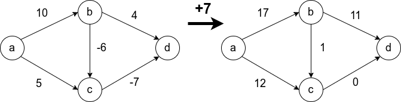
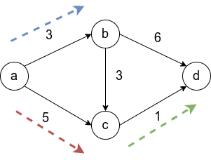
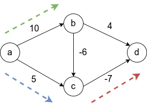

Алгоритм Дейкстры работает на ориентированных (с некоторыми дополнениями и на неориентированных) графах, и призван искать кратчайшие пути между заданной вершиной и всеми остальными вершинами в графе.
Как правило, граф обозначают как набор вершин и рёбер \inline G = (V,E), где число рёбер может быть задано \inline m, а вершин числом \inline n.
Для каждого ребра в графе задан неотрицательный вес \inline l_i, а также вершина, из которой осуществляется поиск оптимальных путей.
Алгоритм Дейкстры может найти кратчайший путь между вершинами \inline s и \inline t в графе, только если существует хотя бы один путь между этими вершинами. Если это условие не выполняется, то алгоритм отработает корректно, вернув значение "бесконечность" для пары несвязанных вершин.
Условие неотрицательности весов рёбер крайне важно и от него нельзя просто избавиться. Не получится свести задачу к решаемой алгоритмом Дейкстры, прибавив наибольший по модулю вес ко всем рёбрам. Это может изменить оптимальный маршрут. На рисунке видно, что в первом случае оптимальный путь между \inline a и \inline d (сумма рёбер на пути наименьшая) изменяется при такой манипуляции. В оригинале путь проходит через \inline a \rightarrow b \rightarrow c \rightarrow d, а после добавления семёрки к всем рёбрам, оптимальный путь проходит через \inline a \rightarrow c \rightarrow d.

рис.20
Как ведёт себя алгоритм Дейкстры на исходном графе, мы разберём, когда выпишем алгоритм. Но для начала зададимся другим вопросом: "почему не применить поиск в ширину для нашего графа?". Известно, что метод BFS находит оптимальный путь от произвольной вершины в ориентированном графе до любой другой вершины, но это справедливо только для рёбер с единичным весом.
Свести задачу к решаемой BFS можно, но если заменить все рёбра неединичной длины \inline n рёбрами длины \inline 1, то граф очень разрастётся, и это приведёт к огромному числу действий при вычислении оптимального маршрута.
Чтобы этого избежать предлагается использовать алгоритм Дейкстры. Опишем его:
Инициализация:
Задаём множество X = \{s\}, состоящее из исходной вершины.
Массив длин кратчайших путей A, в котором изначально есть A[s] = 0, кратчайших путь от вершины до себя самой.
Основный цикл алгоритма::
Пока все вершины не исследованы (или формально X V), повторяем:
Среди всех рёбер в графе (v,w) таких, что v X, а X, выбираем одно, которое минимизирует сумму: A[v] + l_{vw}.
Добавяем эту вершину w в X.
Задаём A[w] равным A[v] + l_\{vw\}.
В итоге исполнения этого алгоритма, массив A будет содержать все оптимальные пути, исходящие из s.
Примеры работы

рис.21
Рассмотрим граф выше, в нём будем искать пути от a до всего остального.
Первый шаг алгоритма определит, что кратчайший путь до b проходит по направлению синей стрелки и зафиксирует кратчайший путь. Второй шаг рассмотрит, все возможные варианты A[v] + l_{vw} и окажется, что оптимальный вариант двигаться вдоль красной стрелки, поскольку 5 меньше, чем \inline 3 + 3 = 6 и 3 + 6 = 9. Добавляется длина кратчайшего пути до c. И наконец, третьим шагом, когда три вершины a,b,c уже лежат в X, остается рассмотреть только два ребра и выбрать, лежащее вдоль зеленой стрелки.
Теперь рассмотрим граф с отрицательными весами, упомянутый выше. Напомню, алгоритм Дейкстры на таком графе может работать некорректно.

рис.22
Первым шагом отбирается ребро вдоль синей стрелки, поскольку это ребро наименьшего веса из исходной вершины. Затем выбирается ребро c d. Это зафиксирует навсегда неверный путь от a к d, в то время как оптимальный путь проходит через центр с отрицательным весом. Последним шагом, будет добавлена вершина b.